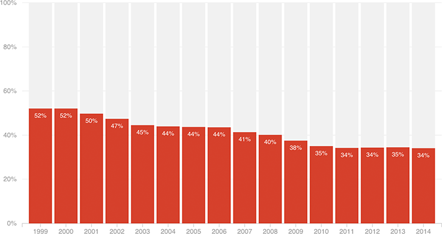

Teen Civilian Labor Force Participation Rate (Annual)
For the summer of 2015, researchers at the Center for Labor Markets and Policy at Drexel University estimate that the labor force participation rate will be 29.8 percent.

Notes
Figures are seasonally adjusted Current Population Survey annual averages.